소방시설관리사 (2024-05-11 기출문제)
1과목: 방안전관리론
1. 분말소화기의 특성에 관한 설명으로 옳지 않은 것은?
- 분말소화약제의 분해 반응 시 발열반응을 한다.
- 축압식소화기는 소화분말을 채운 용기에 이산화탄소 또는 질소가스로 축압시킨다.
- 인산암모늄 소화기의 열분해 생성물은 메타인산, 암모니아, 물이다.
- 제3종 분말소화기는 A급, B급, C급 화재에 모두 적응성이 있다,
(정답률: 29%)

2. 연소범위(폭발범위)에 관한 설명으로 옳지 않은 것은?
- 불활성 가스를 첨가할수록 연소범위는 좁아진다.
- 온도가 높아질수록 폭발범위는 넓어진다.
- 혼합기를 이루는 공기의 산소농도가 높을수록 연소범위는 좁아진다.
- 가연물의 양과 유동상태 및 방출속도 등에 따라 영향을 받는다.
(정답률: 24%)
3. 고체 가연물의 연소방식이 아닌 것은?
- 표면연소
- 예혼합연
- 분해연소
- 자기연소
(정답률: 66%)
4. 면적이 0.12m2인 합판이 완전 연소 시 열방출량(kW)은? (단, 평균질량 감소율은 1,800g/m2·min, 연소열은 25kJ/g, 연소효율은 50%로 가정한다.)
- 45
- 270
- 450
- 2,700
(정답률: 0%)
5. 내화건축물의 구획실내에서 가연물의 연소 시, 최성기의 지배적 열전달로 옳은 것은?
- 확산
- 전도
- 대류
- 복사
(정답률: 29%)
6. 최소발화에너지(MIE)에 영향을 주는 요소에 관한 내용으로 옳은 것은? (단, 일반적인 경향성으로 예외는 적용하지 않는다.)
- 온도가 낮을수록 MIE는 감소한다.
- 압력이 상승하면 MIE는 증가한다.
- 산소농도가 증가할수록 MIE는 감소한다.
- MIE는 화학양론적 조성 부근에서 가장 크다.
(정답률: 37%)
7. 표준상태에서, 5몰(mol)의 프로페인가스(C3H8)가 완전연소를 하는데 발생하는 이산화탄소(CO2)의 부피(m3)는?
- 0.336
- 0.560
- 336
- 560
(정답률: 10%)
8. 물질을 연소시키는 열에너지원의 종류와 발생되는 열원의 연결이 옳은 것을 모두 고른 것은?
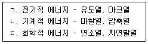
- ㄱ
- ㄱ, ㄴ
- ㄴ, ㄷ
- ㄱ, ㄴ, ㄷ
(정답률: 23%)
9. 두께 3cm인 내열판의 한 쪽 면의 온도는 400℃, 다른 쪽 면의 온도는 40℃일 때, 이 판을 통해 일어나는 열유속(W/m2)은? (단, 내열판의 열전도도는 0.1W/m·℃)
- 1.2
- 12
- 120
- 1,200
(정답률: 5%)
10. 연소생성물과 주요 특성의 연결로 옳지 않은 것은?
- CO - 헤모글로빈과 결합해 산소운반기능 약화
- H2S - 계란 썩은 냄새
- COCl2 - 맹독성 가스로 허용농도는 0.1ppm
- HCN - 맹독성 가스로 0.3ppm의 농도에서 즉사
(정답률: 15%)
11. 다음에서 설명하는 것은?
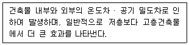
- 플래시오버
- 백드래프트
- 굴뚝효과
- 롤오버
(정답률: 39%)
12. 건축물의 피난 · 방화구조 등의 기준에 관한 규칙상 방화구획의 설치 기준 중 ( )에 들어갈 내용으로 옳은 것은?
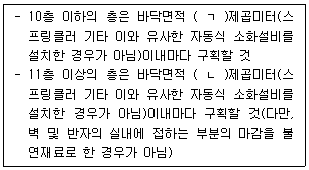
- ㄱ : 500, ㄴ : 200
- ㄱ : 500, ㄴ : 300
- ㄱ : 1,000, ㄴ : 200
- ㄱ : 1,000, ㄴ : 300
(정답률: 20%)
13. 건축물의 피난 · 방화구조 등의 기준에 관한 규칙상 내화구조로 옳지 않은 것은?
- 벽의 경우에는 철골철근콘크리트조로서 두께가 10센티미터 이상인 것
- 기둥의 경우에는 철근콘크리트조로서 그 작은 지름이 15센티미터 이상인 것(다만, 고강도 콘크리트를 사용하는 경우가 아님)
- 바닥의 경우에는 철재의 양면을 두께 5센티미터 이상의 철망모르타르 또는 콘크리트로 덮은 것
- 지붕의 경우에는 철골철근콘크리트조
(정답률: 20%)
14. 건축물의 피난 · 방화구조 등의 기준에 관한 규칙 및 건축법령상 소방관의 진입창의 기준으로 옳은 것은?
- 3층 이상 11층 이하인 층에 각각 1개소 이상 설치할 것. 이 경우 소방관이 진입할 수 있는 창의 가운데에서 벽면 끝까지의 수평거리가 50미터 이상인 경우에는 50미터 이내마다 소방관이 진입할 수 있는 창을 추가로 설치해야 한다.
- 창문의 가운데에 지름 30센티미터 이상의 삼각형을 야간에도 알아볼 수 있도록 빛 반사 등으로 붉은색으로 표시할 것
- 창문의 한쪽 모서리에 타격지점을 지름 3센티미터 이상의 원형으로 표시할 것
- 창문의 크기는 폭 75센티미터 이상, 높이 1.1미터 이상으로 하고, 실내 바닥면으로부터 창의 아랫부분까지의 높이는 80센티미터 이내로 할 것
(정답률: 14%)
15. 내화건축물과 비교한 목조건축물의 화재특성에 관한 설명으로 옳은 것은?
- 공기의 유입이 불충분하여 발염연소가 억제된다.
- 건축물의 구조와 특성상 열이 외부로 방출되는 것보다 축적되는 것이 많다.
- 화재 시 연기 등 연소생성물이 계단이나 복도 등을 따라 상층부로 이동하는 경향이 있다.
- 화염의 분출면적이 크고 복사열이 커서 접근하기 어렵다.
(정답률: 23%)
16. 건축물의 피난 · 방화구조 등의 기준에 관한 규칙상 지하층의 비상탈출구의 기준으로 옳은 것은? (단, 주택의 경우에는 해당되지 않음)
- 비상탈출구의 유효너비는 0.6미터 이상으로 하고, 유효높이는 1.2미터 이상으로 할 것
- 비상탈출구는 출입구로부터 2미터 이상 떨어진 곳에 설치할 것
- 지하층의 바닥으로부터 비상탈출구의 아랫부분까지의 높이가 1.1 미터 이상이 되는 경우에는 벽체에 발판의 너비가 26센티미터 이상인 사다리를 설치할 것
- 피난층 또는 지상으로 통하는 복도나 직통계단까지 이르는 피난통로의 유효너비는 0.75미터 이상으로 하고, 피난통로의 실내에 접하는 부분의 마감과 그 바탕은 불연재료로 할 것
(정답률: 5%)
17. 건축물의 피난 · 방화구조 등의 기준에 관한 규칙상 피난안전구역의 구조 및 설비기준으로 옳지 않은 것은? (단, 초고층건축물과 준초고층건축물에 한함)
- 피난안전구역의 내부마감재료는 불연재료로 설치할 것
- 건축물의 내부에서 피난안전구역으로 통하는 계단은 피난계단의 구조로 설치할 것
- 비상용 승강기는 피난안전구역에서 승하차 할 수 있는 구조로 설치할 것
- 피난안전구역의 높이는 2.1미터 이상일 것
(정답률: 25%)
18. 건축물의 피난 · 방화구조 등의 기준에 관한 규칙상 건축물에 설치하는 계단의 기준 중 ( )에 들어갈 내용으로 옳은 것은? (단, 연면적 200제곱미터를 초과하는 건축물임)
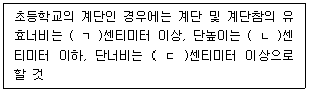
- ㄱ: 120, ㄴ: 16, ㄷ: 26
- ㄱ: 120, ㄴ: 18, ㄷ: 30
- ㄱ: 150, ㄴ: 16, ㄷ: 26
- ㄱ: 150, ㄴ: 18, ㄷ: 30
(정답률: 10%)
19. 메테인(methane)의 완전연소반응식이 다음과 같을 때, 메테인의 발열량(kcal)은?
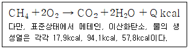
- 187.7
- 191.8
- 201.4
- 229.3
(정답률: 19%)
20. 제1인산암모늄의 열분해 생성물 중 부촉매 소화작용에 해당하는 것은?
- NH3
- HPO3
- H3PO4
- NH4+
(정답률: 5%)
21. 화재 시 발생하는 일산화탄소(CO)에 관한 설명으로 옳지 않은 것은?
- 일산화탄소의 농도는 분해 생성물의 양에 반비례한다.
- 공기가 부족할 때 또는 환기량이 적을수록 증가한다.
- 셀룰로오스계 가연물 연소 시 또는 화재하중이 클수록 증가한다.
- OH 라디칼은 일산화탄소의 산화에 결정적인 요소이다.
(정답률: 5%)
22. 가연성액화가스 저장탱크 주변 화재로 BLEVE 발생 시 FireBall 형성에 영향을 미치는 요인이 아닌 것은?
- 높은 연소열
- 넓은 폭발범위
- 높은 증기밀도
- 연소 상한계에 가까운 조성
(정답률: 10%)
23. 연소 시 산소공급원의 역할에 관한 설명으로 옳은 것은?
- 염소(Cl2)는 조연성 가스로서 산소공급원의 역할을 할 수 있다.
- 일산화탄소(CO)는 불연성 가스로서 산소공급원의 역할을 할 수 없다.
- 이산화질소(NO2)는 가연성 가스로서 산소공급원의 역할을 할 수 있다.
- 수소(H2)는 인화성 가스로서 산소공급원의 역할을 할 수 있다.
(정답률: 15%)
24. 분말소화약제인 탄산수소나트륨 84g이 1기압(atm), 270℃에서 분해되었다. 이 때, 분해 생성된 이산화탄소의 부피(L)는 약 얼마인가?
- 11.1
- 22.3
- 28.6
- 44.6
(정답률: 15%)
25. 가시거리의 한계치를 연기의 농도로 환산한 감광계수(m-1)와 가시거리(m)에 관한 설명으로 옳은 것은?
- 감광계수 0.1은 연기감지기가 작동할 정도이다.
- 감광계수 0.3은 가시거리 2이다.
- 감광계수 1은 어두침침한 것을 느끼는 정도이다.
- 감광계수로 표시한 연기의 농도와 가시거리는 비례관계를 갖는다.
(정답률: 20%)
2과목: 소방수리학·약제화학 및 소방전
26. 할로겐화합물소화약제 중 오존파괴지수(ODP)가 0인 소화약제가 아닌 것은?
- HCFC-124
- HFC-23
- FC-3-1-10
- FK-5-1-12
(정답률: 5%)
27. 소화약제와 주된 소화방법의 연결이 옳은 것은?
- 합성계면활성제포 - 냉각소화
- CHF2CF3 – 냉각소화
- NH4H2PO4 - 억제소화
- CF3Br - 억제소화
(정답률: 5%)
28. 지름 100mm인 관내의 물이 평균유속 5m/s로 흐를 때, 유량(m3/s)은 약 얼마인가?
- 0.039
- 0.39
- 3.9
- 39
(정답률: 10%)
29. 유체의 점성에 관한 설명으로 옳지 않은 것은?
- 동점성계수의 MLT차원은 L2T-1 이다.
- 동점성계수는 점성계수와 유체의 밀도로 나타낼 수 있다.
- 점성계수와 동점성계수의 단위는 같다.
- 점성은 유체에 전단응력이 작용할 때 변형에 저항하는 정도를 나타내는 유체의 성질로 정의된다.
(정답률: 20%)
30. Darcy-Weisbach 공식에서 마찰손실수두에 관한 설명으로 옳은 것은?
- 관의 직경에 반비례한다.
- 관의 길이에 반비례한다.
- 마찰손실계수에 반비례한다.
- 유속의 제곱에 반비례한다
(정답률: 10%)
31. 다음 그림에서 유량이 Q인 물이 방출되고 있다. 이때, 방출유량을 4배 높이기 위한 수위로 옳은 것은? (단, 방출구의 직경 변화는 없고, 점성 등의 영향은 무시한다.)
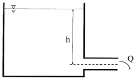
- 2h
- 4h
- 8h
- 16h
(정답률: 0%)
32. 모세관 현상에서 대기압 Pa를 고려하여 액체의 상승높이를 구하는 공식으로 옳은 것은? (단, 표면장력 σ, 접촉각 θ, 단위체적당 비중량 γ, 모세관 직경 d이다.)
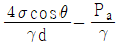
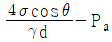
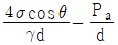
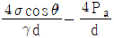
(정답률: 5%)
33. 관수로 흐름의 손실 중 미소손실이 아닌 것은?
- 관 마찰손실
- 급확대손실
- 점차확대손실
- 밸브에 의한 손실
(정답률: 10%)
34. 펌프의 상사법칙으로 옳은 것을 모두 고른 것은? (단, 펌프의 비속도는 동일하다.)
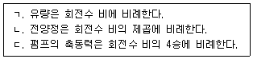
- ㄱ
- ㄷ
- ㄱ, ㄴ
- ㄴ, ㄷ
(정답률: 10%)
35. 직경 0.5m의 수평관에 1m3/s의 유량과 2.2kgf/cm2의 압력으로 송수하기 위한 펌프의 소요동력(kW)은 약 얼마인가? (단, 펌프 효율은 85%이며, 관내 마찰손실은 무시한다.)
- 15.2
- 253.6
- 268.9
- 283.6
(정답률: 5%)
36. 직경 40mm 호스로 200L/min의 물이 분출되고 있다. 이 호스의 직경을 20mm로 줄이면 분출 속도(m/s)는 약 얼마나 증가하는가?
- 1.95
- 4.95
- 7.95
- 12.95
(정답률: 5%)
37. 소화원리 중 화학적 소화방법에 해당하는 것은?
- 질식소화
- 냉각소화
- 희석소화
- 억제소화
(정답률: 15%)
38. 방호대상물이 서고이며 체적이 80m3인 방호구역 에 전역방출방식의 이산화탄소 소화설비를 설치하고자 한다. 이산화탄소 소화설비의 화재 안전성능기준(NFSC106)에 의해 산정한 최소 약제량(kg)은?
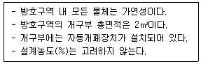
- 130
- 140
- 150
- 160
(정답률: 0%)
39. 소화약제로 사용된 4℃의 물이 모두 200℃ 과열수증기로 변화하였다면, 물은 약 몇 배 팽창하였는가? (단, 화재실은 대기압상태로 화재발생 전·후 압력의 변화는 없으며, 과열수증기는 이상기체로 가정한다. 4℃에서의 물의 밀도 = 1g/cm3, H 및 O의 원자량은 각각 1과 16 이다.)
- 1,700
- 1,928
- 2,156
- 2,383
(정답률: 0%)
40. 제3종 분말소화약제의 소화효과는 다음과 같다. 제3종 분말소화약제가 다른 분말소화약제와 달리 일반(A급) 화재에도 적용이 가능한 이유로 옳은 것을 모두 고른 것은?
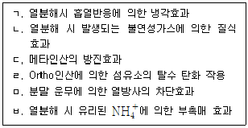
- ㄱ, ㄴ
- ㄷ, ㄹ
- ㄹ, ㅁ, ㅂ
- ㄱ, ㄴ, ㄷ, ㄹ, ㅁ, ㅂ
(정답률: 0%)
41. 화재현장에서 15℃의 물이 100℃의 수증기로 모두 바뀌었다고 가정할 때, 소화약제로 사용된 물의 냉각효과에 관한 설명으로 옳지 않은 것은?
- 물 1kg 당 흡수한 현열은 약 355.3kJ이다.
- 물 1kg 당 흡수한 용융잠열은 약 80kcal이다.
- 물 1kg 당 흡수한 증발잠열은 약 2,253kJ이다.
- 물 1kg 당 흡수한 총열은 약 624kcal이다.
(정답률: 10%)
42. 충전비가 1.6인 고압식 이산화탄소소화설비에 필요한 약제량이 230kg일 때, 68L 표준용기는 몇 개가 필요한가?
- 4
- 5
- 6
- 7
(정답률: 10%)
43. 콘덴서의 직렬 및 병렬 접속에 관한 설명으로 옳지 않은 것은?
- 직렬 접속 시 정전용량이 큰 콘덴서에 전압이 많이 걸린다.
- 직렬 접속 시 합성 정전용량은 감소한다.
- 병렬 접속 시 총 전하량은 각 콘덴서의 전하량의 합과 같다.
- 병렬 접속 시 합성 정전용량은 각 콘덴서의 정전용량의 합과 같다.
(정답률: 0%)
44. 동종 금속 도선의 두 점간에 온도차를 주고 고온 쪽에서 저온 쪽으로 전류를 흘리면, 줄열 이외에 도선 속에서 열이 발생하거나 흡수가 일어나는 현상은?
- 제벡 효과
- 톰슨 효과
- 펠티에 효과
- 핀치 효과
(정답률: 5%)
45. 자기력선의 성질에 관한 설명으로 옳지 않은 것은?
- 자기력선은 서로 교차하지 않는다.
- 자계의 방향은 자기력선 위의 한 점에서의 접선 방향이다.
- 자기력선의 밀도는 자계의 세기와 같다.
- 자기력선은 자석 내부에서는 요극에서 나와 N극으로 들어간다.
(정답률: 5%)
46. 자기장 내에 존재하는 도체에 전류를 흘릴 때 도체가 받는 전자력의 방향을 결정하는 법칙은?
- 렌츠의 법칙
- 플레밍의 왼손 법칙
- 플레밍의 오른손 법칙
- 암페어의 오른나사 법칙
(정답률: 5%)
47. 한국전기설비규정(KEC)에 따른 전선의 식별에서 상과 색상이 옳은 것을 모두 고른 것은?
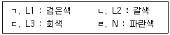
- ㄹ
- ㄴ, ㄷ
- ㄷ, ㄹ
- ㄱ, ㄴ, ㄷ, ㄹ
(정답률: 5%)
48. 다음 회로에서 공진시의 임피던스 값은?
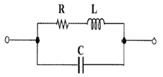
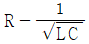
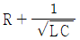
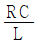
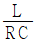
(정답률: 0%)
49. 다음 회로에서 단자 C, D간의 전압을 40V라고 하면, 단자 A, B간의 전압(V)은?
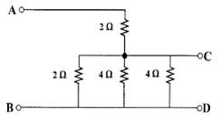
- 60
- 120
- 180
- 240
(정답률: 27%)
50. 유도전동기 기동 시 각 상당 임피던스가 동일한 고정자 권선의 접속을 △결선에서 Y결선으로 변환할 때의 선전류 비(
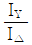
)는?
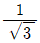
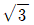
- 3
(정답률: 10%)
3과목: 소방관련법령
51. 소방기본법령상 소방기술 및 소방산업의 국제경쟁력과 국제적 통용성을 높이기 위하여 소방청장이 추진하는 사업으로 명시되지 않은 것은?
- 소방기술 및 소방산업의 국제 협력을 위한 조사 · 연구
- 소방기술과 안전관리에 관한 교육 및 조사 · 연구
- 소방기술 및 소방산업의 국외시장 개척
- 소방기술 및 소방산업에 관한 국제 전시회, 국제 학술회의 개최 등 국제 교류
(정답률: 25%)
52. 소방기본법령상 소방대의 소방지원활동에 해당하지 않는 것은?
- 산불에 대한 예방·진압 등 지원활동
- 자연재해에 따른 급수·배수 및 제설 등 지원활동
- 집회·공연 등 각종 행사 시 사고에 대비한 근접대기 등 지원활동
- 끼임, 고립 등에 따른 위험제거 및 구출 활동
(정답률: 28%)
53. 소방시설공사업법령상 벌칙에 관한 내용으로 옳은 것은?
- 공사감리 결과보고서의 제출을 거짓으로 한 자는 3천만원 이하의 벌금에 처한다.
- 소방시설공사를 다른 업종의 공사와 분리하여 도급하지 아니한 자는 1천만원 이하의 벌금에 처한다.
- 소방기술자를 공사 현장에 배치하지 아니한 자에게는 200만원 이하의 과태료를 부과한다.
- 공사대금의 지급보증을 정당한 사유 없이 이행하지 아니한 자에게는 300만원 이하의 과태료를 부과한다.
(정답률: 29%)
54. 소방시설공사업법령상 소방시설공사 분리 도급의 예외로 명시되지 않은 것은? (단, 다른 조건은 고려하지 않음)
- 연소방지설비의 살수구역을 증설하는 공사인 경우
- 연면적이 1천제곱미터 이하인 특정소방대상물에 비상경보설비를 설치하는 공사인 경우
- 국방 및 국가안보 등과 관련하여 기밀을 유지해야 하는 공사인 경우
- ｢재난 및 안전관리 기본법｣에 따른 재난의 발생으로 긴급하게 착공해야 하는 공사인 경우
(정답률: 20%)
55. 소방시설공사업법령상 2차 위반 시 100만원의 과태료를 부과하는 경우를 모두 고른 것은? (단, 가중 또는 감경 사유는 고려하지 않음)
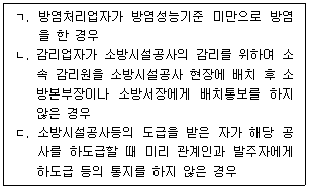
- ㄱ, ㄴ
- ㄱ, ㄷ
- ㄴ, ㄷ
- ㄱ, ㄴ, ㄷ
(정답률: 5%)
56. 소방시설공사업법령상 소방시설업의 업종별 등록기준 중 기계 및 전기분야 소방설비기사 자격을 함께 취득한 사람을 주된 기술인력으로 볼 수 있는 경우는?
- 전문 소방시설설계업과 화재위험평가 대행업을 함께 하는 경우
- 일반 소방시설설계업과 전문 소방시설공사업을 함께 하는 경우
- 전문 소방시설설계업과 전문 소방시설공사업을 함께 하는 경우
- 전문 소방시설설계업과 일반 소방시설공사업을 함께 하는 경우
(정답률: 15%)
57. 소방시설 설치 및 관리에 관한 법령상 중앙소방기술심의위원회의 심의 사항을 모두 고른 것은?
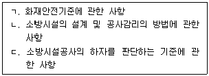
- ㄱ, ㄴ
- ㄱ, ㄷ
- ㄴ, ㄷ
- ㄱ, ㄴ, ㄷ
(정답률: 15%)
58. 소방시설 설치 및 관리에 관한 법령상 특정소방대상물 중 근린생활시설에 해당하는 것은?
- 같은 건축물에 해당 용도로 쓰는 바닥면적의 합계가 800m2인 슈퍼마켓
- 같은 건축물에 해당 용도로 쓰는 바닥면적의 합계가 600m2인 테니스장
- 같은 건축물에 해당 용도로 쓰는 바닥면적의 합계가 500m2인 공연장
- 같은 건축물에 해당 용도로 쓰는 바닥면적의 합계가 700m2인 금융업소
(정답률: 15%)
59. 소방시설 설치 및 관리에 관한 법령상 소방청장 및 시 · 도지사가 처분 전에 청문을 하여야 하는 경우가 아닌 것은?
- 소방시설관리사 자격의 취소 및 정지
- 방염성능검사 결과의 취소 및 검사 중지
- 우수품질인증의 취소
- 전문기관의 지정취소 및 업무정지
(정답률: 27%)
60. 소방시설 설치 및 관리에 관한 법령상 소방시설등의 자체점검에 관한 설명으로 옳지 않은 것은?
- 해당 특정소방대상물의 소방시설등이 신설된 경우, 관계인은 ｢건축법｣에 따라 건축물을 사용할 수 있게 된 날부터 30일 이내에 최초점검을 실시해야 한다.
- 스프링클러가 설치된 특정소방대상물이나 제연설비가 설치된 터널은 종합점검 대상이다.
- 자체점검의 면제를 신청하려는 관계인은 자체점검의 실시 만료일 3일 전까지 자체점검 면제신청서를 소방본부장 또는 소방서장에게 제출해야 한다.
- 관리업자가 자체점검을 실시한 경우 그 점검이 끝난 날부터 10일 이내에 소방시설등점검표를 첨부하여 소방시설등 자체점검 실시결과 보고서를 관계인에게 제출해야 한다.
(정답률: 20%)
61. 소방시설 설치 및 관리에 관한 법령상 성능위주설계를 해야 하는 특정소방대상물(신축하는 것만 해당)로 옳지 않은 것은?
- 연면적 3만제곱미터 이상인 철도 및 도시철도 시설
- 길이가 5천미터 이상인 터널
- 30층 이상(지하층을 포함)이거나 지상으로부터 높이가 120미터 이상인 아파트등
- 연면적 10만제곱미터 이상인 창고시설
(정답률: 20%)
62. 소방시설 설치 및 관리에 관한 법령상 300만원 이하의 과태료가 부과되는 자는?
- 소방시설관리사증을 다른 사람에게 빌려준 자
- 방염성능검사에 합격하지 아니한 물품에 합격표시를 한 자
- 형식승인을 받은 후 해당 소방용품에 대하여 형상 등의 일부를 변경하면서 변경승인을 받지 아니한 자
- 자체점검을 실시한 후 그 점검결과를 거짓으로 보고한 자
(정답률: 10%)
63. 화재의 예방 및 안전관리에 관한 법령상 보일러 등의 설비 또는 기구 등의 위치·구조 등에 관한 설명으로 옳지 않은 것은?
- 화목 등 고체 연료를 사용할 때에는 연통의 배출구는 사업장용 보일러 본체보다 1미터 이상 높게 설치해야 한다.
- 주방설비에 부속된 배출덕트는 0.5밀리미터 이상의 아연도금강판 또는 이와 같거나 그 이상의 내식성 불연재료로 설치해야 한다.
- 사업장용 보일러 본체와 벽·천장 사이의 거리는 0.6미터 이상이어야 한다.
- 난로의 연통은 천장으로부터 0.6미터 이상 떨어지고, 연통의 배출구는 건물 밖으로 0.6미터 이상 나오게 설치해야 한다.
(정답률: 20%)
64. 화재의 예방 및 안전관리에 관한 법령상 300만원 이하의 벌금에 처해지는 자는?
- 화재예방안전진단 결과를 제출하지 아니한 진단기관
- 실무교육을 받지 아니한 소방안전관리자 또는 소방안전관리보조자
- 소방안전관리자를 선임하지 아니한 소방안전관리대상물의 관계인
- 근무자 또는 거주자에게 피난유도 안내정보를 정기적으로 제공하지 않은 소방안전관리대상물의 관계인
(정답률: 10%)
65. 화재의 예방 및 안전관리에 관한 법령상 소방안전관리자에 관한 설명으로 옳은 것은?
- 신축된 소방안전관리대상물의 관계인은 해당 소방안전관리대상물의 사용승인일부터 20일 이내에 신규 소방안전관리자를 선임해야 한다.
- 소방안전관리자 선임 연기 신청서를 제출받은 소방본부장 또는 소방서장은 7일 이내에 소방안전관리자 선임 기간을 정하여 2급 또는 3급 소방안전관리대상물의 관계인에게 통보해야 한다.
- 소방안전관리자는 소방안전관리자로 선임된 날부터 3개월 이내에 실무교육을 받아야 하며, 그 이후에는 2년마다 1회 이상 실무교육을 받아야 한다.
- 건설현장 소방안전관리대상물의 공사시공자는 소방안전관리자를 선임한 날부터 14일 이내에 소방본부장 또는 소방서장에게 선임 신고를 해야 한다.
(정답률: 15%)
66. 화재의 예방 및 안전관리에 관한 법령상 특수가연물에 관한 설명으로 옳지 않은 것은?
- 10,000킬로그램 이상의 석탄 · 목탄류는 특수가연물에 해당한다.
- 특수가연물인 가연성 고체류 또는 가연성 액체류를 저장하는 장소에는 특수가연물 표지에 품명과 인화점을 표시하여야 한다.
- 살수설비를 설치한 경우 특수가연물(발전용 석탄·목탄류 제외)은 15미터 이하의 높이로 쌓아야 한다.
- 특수가연물(발전용 석탄·목탄류 제외)을 실외에 쌓는 경우, 쌓는 부분 바닥 면적의 사이는 3미터 또는 쌓는 높이 중 큰 값 이상으로 간격을 두어야 한다.
(정답률: 10%)
67. 위험물안전관리법령상 탱크안전성능시험자가 30일 이내에 시 · 도지사에게 변경 신고를 해야 하는 경우가 아닌 것은?
- 영업소 소재지의 변경
- 보유장비의 변경
- 대표자의 변경
- 상호 또는 명칭의 변경
(정답률: 25%)
68. 위험물안전관리법령상 옥외저장소에 관한 설명으로 옳지 않은 것은?
- 옥외저장소를 설치하는 경우, 그 설치장소를 관할하는 시 · 도지사의 허가를 받아야 한다.
- 옥외저장소에는 제2류 위험물 및 제5류 위험물을 저장할 수 있다.
- 옥외저장소에 선반을 설치하는 경우 선반의 높이는 6m를 초과하지 않아야 한다.
- 알코올류를 저장하는 옥외저장소에는 살수설비 등을 설치하여야 한다.
(정답률: 31%)
69. 위험물안전관리법령상 과태료 처분에 해당하지 않는 경우는?
- 관할소방서장의 승인을 받지 아니하고 지정수량 이상의 위험물을 90일 동안 임시로 저장한 경우
- 제조소등 설치자의 지위를 승계한 날부터 30일 이내에 시 · 도지사에게 그 사실을 신고하지 아니한 경우
- 제조소등의 관계인이 안전관리자를 해임한 날부터 30일 이내에 다시 안전관리자를 선임하지 아니한 경우
- 제조소등의 정기점검을 한 날부터 30일 이내에 점검결과를 시 · 도지사에게 제출하지 아니한 경우
(정답률: 5%)
70. 위험물안전관리법령상 이동탱크저장소의 위치구조 및 설비의 기준 중 이동저장 탱크의 구조에 관한 조문의 일부이다. ( )에 들어갈 숫자로 옳은 것은?
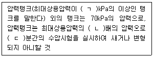
- ㄱ: 20, ㄴ: 1.1, ㄷ: 5
- ㄱ: 20, ㄴ: 1.5, ㄷ: 5
- ㄱ: 46.7, ㄴ: 1.1, ㄷ: 10
- ㄱ: 46.7, ㄴ: 1.5, ㄷ: 10
(정답률: 5%)
71. 위험물안전관리법령상 위험물시설의 안전관리자에 관한 설명으로 옳지 않은 것은?
- 제조소등에 있어서 위험물취급자격자가 아닌 자는 안전관리자 또는 그 대리자가 참여한 상태에서 위험물을 취급하여야 한다.
- 시·도지사, 소방본부장 또는 소방서장은 안전관리자가 안전교육을 받지 아니한 때에는 그 교육을 받을 때까지 그 자격으로 행하는 행위를 제한할 수 있다.
- 안전관리자가 되려는 사람은 16시간의 강습교육을 받아야 한다.
- 지정수량 5배 이하의 제4류 위험물만을 취급하는 제조소에서는 소방공무원경력 3년인 자를 안전관리자로 선임할 수 있다.
(정답률: 10%)
72. 다중이용업소의 안전관리에 관한 특별법령상 피난설비 중 비상구 설치 예외에 관한 조문의 일부이다. ( )에 들어갈 내용으로 옳은 것은?
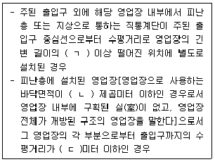
- ㄱ: 2분의 1, ㄴ: 33, ㄷ: 10
- ㄱ: 2분의 1, ㄴ: 66, ㄷ: 20
- ㄱ: 3분의 2, ㄴ: 33, ㄷ: 10
- ㄱ: 3분의 2, ㄴ: 66, ㄷ: 20
(정답률: 15%)
73. 다중이용업소의 안전관리에 관한 특별법령상 안전관리기본계획(이하 '기본계획'이라 함)에 관한 설명으로 옳지 않은 것은?
- 소방청장은 기본계획을 관계 중앙행정기관의 장과 협의를 거쳐 5년마다 수립해야 한다.
- 기본계획 수립지침에는 화재 등 재난 발생 경감대책이 포함되어야 한다.
- 소방청장은 기본계획을 수립하면 행정안전부장관에게 보고하여야 한다.
- 소방청장은 매년 연도별 안전관리계획을 전년도 12월 31일까지 수립하여야 한다.
(정답률: 10%)
74. 다중이용업소의 안전관리에 관한 특별법령상 1천만원의 이행강제금을 부과하는 경우를 모두 고른 것은? (단, 가중 또는 감경 사유는 고려하지 않음)
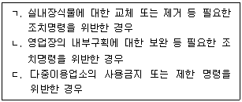
- ㄱ, ㄴ
- ㄱ, ㄷ
- ㄴ, ㄷ
- ㄱ, ㄴ, ㄷ
(정답률: 5%)
75. 다중이용업소의 안전관리에 관한 특별법령상 다중이용업소에 대한 화재위험평가대상에 관한 조문의 일부이다. ( )에 들어갈 내용으로 옳은 것은?
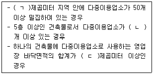
- ㄱ: 1천, ㄴ: 10, ㄷ: 2천
- ㄱ: 1천, ㄴ: 40, ㄷ: 2천
- ㄱ: 2천, ㄴ: 10, ㄷ: 1천
- ㄱ: 2천, ㄴ: 40, ㄷ: 1천
(정답률: 10%)
4과목: 위험물의 성상 및 시설기준
76. 제1류 위험물 중 질산칼륨에 관한 설명으로 옳지 않은 것은?
- 물, 글리세린, 에탄올, 에테르에 잘 녹는다.
- 무색 또는 백색 결정 이거나 분말이다.
- 강산화제이며 가열하면 분해하여 산소를 방출한다.
- 흑색화약, 불꽃류, 금속열처리제, 산화제 등으로 사용된다.
(정답률: 5%)
77. 제1류 위험물 중 아염소산나트륨에 관한 설명으로 옳지 않은 것은?
- 섬유, 펄프의 표백, 살균제, 염색의 산화제, 발염제로 사용된다.
- 가열, 충격, 마찰에 의해 폭발적으로 분해한다.
- 산을 가할 경우는 ClO2 가스가 발생한다.
- 무색 결정성 분말로 조해성이 있고, 비극성 유류에 잘 녹는다.
(정답률: 10%)
78. 제2류 위험물 중 황에 관한 설명으로 옳지 않은 것은?
- 물에 불용이고, 알코올에 난용이다.
- 공기 중에서 연소하기 쉽다.
- 미세한 분말상태로 공기 중에 부유하면 분진폭발을 일으킨다.
- 전기의 도체로 마찰에 의해 정전기가 발생할 우려가 있다.
(정답률: 14%)
79. 제2류 위험물 중 주석분에 관한 설명으로 옳은 것은?
- 뜨겁고 진한 염산과 반응하여 수소가 발생된다.
- 염기와 서서히 반응하여 산소가 발생된다.
- 미세한 조각이 대량으로 쌓여 있더라도 자연발화 위험이 없다.
- 공기나 물속에서 녹이 슬기 쉽다.
(정답률: 10%)
80. 제3류 위험물 중 리툼에 관한 설명으로 옳은 것은?
- 건조한 실온의 공기에서 반응하며, 100℃ 이상으로 가열하면 휘백색 불꽃을 내며 연소한다.
- 주기율표상 알칼리토금속에 해당한다.
- 상온에서 수소와 반응하여 수소화합물을 만든다.
- 습기가 존재하는 상태에서는 은색으로 변한다.
(정답률: 10%)
81. 제3류 위험물 중 알킬알루미늄에 관한 설명으로 옳은 것은?
- 물, 산과 반응하지 않는다,
- 탄소 수가 C1~C4까지 공기 중에 노줄되면 자연발화한다.
- 저장탱크에 희석안정제로 핵산, 벤젠, 톨루엔, 알코올 등을 넣어둔다,
- 무색의 투명한 액체 또는 고체로 독성이 없다.
(정답률: 10%)
82. 탄화칼슘 10kg이 물과 반응하여 발생시키는 아세틸렌 부피(m3)는 약 얼마인가? (단, 원자량 Ca 40, C 12, 반응 시 온도와 압력은 30℃, 1기압으로 가정한다.)
- 3.15
- 3.50
- 3.88
- 4.23
(정답률: 5%)
83. 제4류 위험물 중 다이에틸에터(diethyl ether)에 관한 설명으로 옳지 않은 것을 모두 고른 것은?
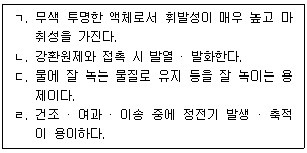
- ㄱ, ㄹ
- ㄴ, ㄷ
- ㄱ, ㄴ, ㄹ
- ㄱ, ㄴ, ㄷ, ㄹ
(정답률: 10%)
84. 4mol의 나이트로글리세린[C3H5(ONO2)3]이 폭발할 때 생성되는 질소의 양(g)은? (단, 원자량 C 12, H 1, O 16, N 14이다.)
- 32
- 168
- 180
- 528
(정답률: 15%)
85. 제5류 위험물 중 유기과산화물에 포함되는 물질은?
- 벤조일퍼옥사이드 - (C6H5CO)2O2
- 질산에틸 - C2H5ONO2
- 나이트로글라이콜 – C2H4(ONO2)2
- 트라이나이트로페놀 – C6H2(NO2)3OH
(정답률: 5%)
86. 제6류 위험물인 질산의 용도로 옳지 않은 것은?
- 의약
- 비료
- 표백제
- 셀룰로이드 제조
(정답률: 0%)
87. 제6류 위험물에 관한 설명으로 옳지 않은 것은?
- 과염소산은 무색의 유동성 액체이다.
- 과산화수소의 농도가 36wt% 미만인 것은 위험물에 해당되지 않는다.
- 질산의 비중이 1.49 미만인 것은 위험물에 해당되지 않는다.
- 산소를 많이 포함하여 다른 가연물의 연소를 도우며, 가연성이다,
(정답률: 20%)
88. 위험물안전관리법령상 제조소에서 저장 또는 취급하는 위험물의 주의사항을 표시한 게시판으로 옳은 것은?
- 트라이에틸알루미늄 - 물기주의 - 백색바탕에 청색문자
- 과산화나트륨 - 물기엄금 - 청색바탕에 백색문자
- 질산메틸 - 화기주의 - 적색바탕에 백색문자
- 적린 - 화기엄금 - 백색바탕에 적색문자
(정답률: 10%)
89. 위험물안전관리법령상 제조소의 위치 · 구조 및 설비의 기준 중 위험물을 취급하는 건축물에 설치하는 환기설비의 기준으로 옳은 것은?
- 환기는 강제배기방식으로 할 것
- 환기구는 지붕위 또는 지상 1.8m 이상의 높이에 설치할 것
- 급기구는 높은 곳에 설치하고 가는 눈의 구리망 등으로 인화방지망을 설치할 것
- 급기구가 설치된 실의 바닥면적이 115m2인 경우 급기구의 면적은 450cm2 이상으로 할 것
(정답률: 5%)
90. 위험물안전관리법령상 제조소의 위치 · 구조 및 설비의 기준 중 위험물을 취급하는 건축물에 설치하는 채광 및 조명설비의 기준으로 옳은 것은? (단, 예외규정은 고려하지 않는다.)
- 채광설비는 난연재료로 할 것
- 연소의 우려가 없는 장소에 설치하되 채광면적을 최대로 할 것
- 조명설비의 전선은 내화·내열전선으로 할 것
- 조명설비의 점멸스위치는 출입구 내부에 설치할 것
(정답률: 15%)
91. 위험물안전관리법령상 제조소의 위치 · 구조 및 설비의 기준 중 위험물을 취급하는 건축물 그 밖의 시설 주위에 3m 이상 너비의 공지를 보유해야 하는 경우를 모두 고른 것은?
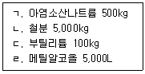
- ㄱ
- ㄴ, ㄷ
- ㄱ, ㄴ, ㄷ
- ㄴ, ㄷ, ㄹ
(정답률: 15%)
92. 위험물안전관리법령상 위험물제조소의 옥외에 있는 위험물취급탱크 3기가 다음과 같이 하나의 방유제 내에 있을 때, 방유제의 최소 용량(m3)은?
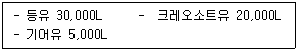
- 17
- 17.5
- 18
- 18.5
(정답률: 27%)
93. 위험물안전관리법령상 제조소의 위치 · 구조 및 설비의 기준 중 피뢰침(｢산업표준화법｣에 따른 한국산업표준 중 피뢰설비 표준에 적합한 것)을 설치하여야 하는 제조소는? (단, 제조소의 주위의 상황에 따라 안전상 피뢰침을 설치해야 하는 상황이다.)
- 염소산칼륨 300kg을 취급하는 제조소
- 수소화칼슘 1,500kg을 취급하는 제조소
- 과염소산 3,000kg을 취급하는 제조소
- 이황화탄소 500L를 취급하는 제조소
(정답률: 10%)
94. 위험물안전관리법령상 지하저장탱크 용량이 40,000L인 경우 탱크의 최대지름(mm)은?
- 1,625
- 2,450
- 3,200
- 3,657
(정답률: 10%)
95. 위험물안전관리법령상 1인의 안전관리자를 중복하여 선임할 수 있는 경우, 행정안전부령이 정하는 저장소의 기준으로 옳은 것은? (단, 동일구내에 있거나 상호 100m 이내의 거리에 있는 저장소로서 저장소의 규모, 저장하는 위험물의 종류 등을 고려하여 동일인이 설치한 경우이다.)
- 10개 이하의 암반탱크저장소
- 35개 이하의 옥외탱크저장소
- 30개 이하의 옥내저장소
- 30개 이하의 옥외저장소
(정답률: 5%)
96. 위험물안전관리법령상 이동탱크저장소의 위치 · 구조 및 설비의 기준에 관한 설명으로 옳은 것을 모두 고른 것은?
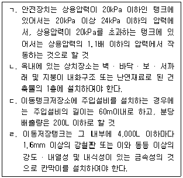
- ㄱ
- ㄱ, ㄴ
- ㄱ, ㄴ, ㄷ
- ㄴ, ㄷ, ㄹ
(정답률: 18%)
97. 위험물안전관리법령상 옥내저장소에 벤젠 20L 용기 200개와 포름산 200L 용기 20개를 저장하고 있다면, 이 저장소에는 지정수량 몇 배를 저장하고 있는가? (단, 용기에 가득 차 있다고 가정한다.)
- 12
- 21
- 22
- 26
(정답률: 10%)
98. 위험물안전관리법령상 판매취급소의 위치 · 구조 및 설비의 기준으로 옳지 않은 것은?
- 제1종 판매취급소는 건축물의 1층에 설치할 것
- 제1종 판매취급소의 위험물을 배합하는 실의 바닥면적은 5m2 이상 15m2 이하로 할 것
- 제2종 판매취급소의 용도로 사용하는 부분은 벽 · 기둥 · 바닥 및 보를 내화구조로 할 것
- 제2종 판매취급소의 용도로 사용하는 부분에 상층이 있는 경우에 있어서는 상층의 바닥을 내화구조로 하는 동시에 상층으로의 연소를 방지하기 위한 조치를 강구할 것
(정답률: 10%)
99. 위험물안전관리법령상 소화설비 기준 중 소화난이도등급Ⅰ의 제조소 및 일반취급소에 설치하여야 하는 소화설비로 옳은 것을 모두 고른 것은?
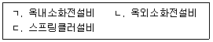
- ㄱ
- ㄱ, ㄴ
- ㄴ, ㄷ
- ㄱ, ㄴ, ㄷ
(정답률: 15%)
100. 다음은 위험물안전관리법령상 옮겨 담는 일반취급소의 특례기준이다. ( )에 알맞은 숫자로 옳은 것은? (단, 당해 일반취급소에 인접하여 연소의 우려가 있는 건축물은 없다.)
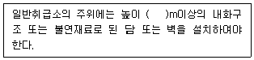
- 1
- 2
- 3
- 4
(정답률: 5%)
5과목: 소방시설의 구조원리
101. 옥내소화전설비의 화재안전기술기준상 물올림장치의 설치기준 중 일부이다. ( )에 들어갈 것으로 옳은 것은?
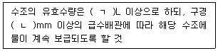
- ㄱ: 100, ㄴ: 15
- ㄱ: 100, ㄴ: 20
- ㄱ: 200, ㄴ: 15
- ㄱ: 200, ㄴ: 20
(정답률: 15%)
102. 옥외소화전설비의 화재안전기술기준에 따라 옥외소화전 3개가 다음 조건과 같이 설치된 경우, 펌프의 축동력(kW)은 약 얼마인가?
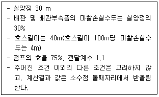
- 7.5
- 10.0
- 11.0
- 13.0
(정답률: 20%)
103. 옥내소화전설비의 화재안전기술기준상 옥상수조를 설치하지 않아도 되는 기준으로 옳은 것은?
- 압력수조를 가압송수장치로 설치한 경우
- 수원이 건축물의 최하층에 설치된 방수구보다 높은 위치에 설치된 경우
- 건축물의 높이가 지표면으로부터 10m를 초과하는 경우
- 고가수조를 가압송수장치로 설치한 경우
(정답률: 5%)
104. 내화구조이고 물품보관용 랙이 설치되지 않은 가로 50m, 세로 30m인 창고에 라지드롭형 스프링클러헤드를 정방형으로 배치하는 경우 필요한 헤드의 최소 설치개수는? (단, 특수가연물을 저장 또는 취급하지 않음)
- 84개
- 160개
- 187개
- 273개
(정답률: 15%)
1⑤. 물분무소화설비의 화재안전기술기준상 고압의 전기기기가 있는 장소는 전기의 절연을 위하여 전기기기와 물분무헤드 사이에 거리를 두어야 한다. 전기기기의 전압(kV)에 따라 이격한 거리(cm)로 옳은 것은?
- 66 kV - 60 cm
- 120 kV - 130 cm
- 150 kV - 160 cm
- 200 kV - 190 cm
(정답률: 5%)
106. 포소화설비의 화재안전기술기준상 용어의 정의로 옳지 않은 것은?
- "비확관형 분기배관"이란 배관의 측면에 분기호칭내경 이상의 구멍을 뚫고 배관이음쇠를 용접 이음한 배관을 말한다.
- "포소화전설비"란 포소화전방수구 · 호스 및 이동식포노즐을 사용하는 설비를 말한다.
- "주펌프"란 구동장치의 회전 또는 왕복운동으로 소화용수를 가압하여 그 압력으로 급수하는 주된 펌프를 말한다.
- "프레셔 프로포셔너방식"이란 펌프의 토출관에 압입기를 설치하여 포 소화약제 압입용 펌프로 포 소화약제를 압입시켜 혼합하는 방식을 말한다.
(정답률: 0%)
107. 포소화설비의 화재안전성능기준상 특수가연물을 저장 · 취급하는 특정소방대상물 중 바닥면적이 200m2인 부분에 포헤드방식으로 포소화설비를 설치하는 경우 1분당 최소 방사량(L)은? (단, 포소화약제의 종류는 합성계면활성제포로 함)
- 740
- 1,300
- 1,600
- 1,700
(정답률: 15%)
108. 피난기구의 화재안전기술기준상 설치장소별 피난기구 적응성에서 지상 4층 노유자 시설에 적응성이 있는 피난기구를 모두 고른 것은?
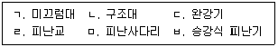
- ㄱ, ㄷ, ㄹ
- ㄱ, ㄷ, ㅁ
- ㄴ, ㄹ, ㅂ
- ㄴ, ㅁ, ㅂ
(정답률: 15%)
109. 창고시설의 화재안전기술기준상 피난유도선의 설치기준이다. ( )에 들어갈 것으로 옳은 것은?
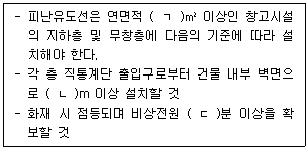
- ㄱ: 10,000, ㄴ: 10, ㄷ: 20
- ㄱ: 10,000, ㄴ: 20, ㄷ: 20
- ㄱ: 15,000, ㄴ: 10, ㄷ: 30
- ㄱ: 15,000, ㄴ: 20, ㄷ: 30
(정답률: 5%)
110. 자동화재탐지설비 및 시각경보장치의 화재안전성능기준상 다음 조건에 따른 계단에 설치하여야 하는 연기감지기( ㄱ )의 수와 경계구역( ㄴ )의 수는?
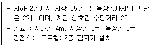
- ㄱ: 8개, ㄴ: 4개
- ㄱ: 8개, ㄴ: 6개
- ㄱ: 14개, ㄴ: 4개
- ㄱ: 14개, ㄴ: 6개
(정답률: 5%)
111. 화재안전기술기준상 비상방송설비의 음향장치 설치기준으로 옳지 않은 것은?
- 아파트등의 경우 실내에 설치하는 확성기 음성입력은 1W 이상일 것
- 음량조정기를 설치하는 경우 음량조정기의 배선은 3선식으로 할 것
- 조작부의 조작스위치는 바닥으로부터 0.8m 이상 1.5m 이하의 높이에 설치할 것
- 창고시설에서 발화한 때에는 전 층에 경보를 발해야 한다.
(정답률: 10%)
112. 비상조명등의 화재안전기술기준상 휴대용비상조명등의 설치기준으로 옳지 않은 것은?
- 사용시 자동으로 점등되는 구조일 것
- 건전지 및 충전식 배터리의 용량은 20분 이상 유효하게 사용할 수 있는 것으로 할 것
- 외함은 난연성능이 있을 것
- 지하상가 및 지하역사에는 수평거리 50m 이내마다 3개 이상 설치
(정답률: 5%)
113. 자동화재탐지설비 및 시각경보장치의 화재안전기술기준에 관한 설명으로 옳지 않은 것은?
- 광전식분리형감지기의 광축(송광면과 수광면의 중심을 연결한 선)은 나란한 벽으로부터 0.5m 이상 이격하여 설치할 것
- 청각장애인용 시각경보장치의 설치 높이는 천장의 높이가 2m 이하인 경우에는 천장으로부터 0.15m 이내의 장소에 설치해야 한다.
- 수신기는 화재로 인하여 하나의 층의 지구음향장치 또는 배선이 단락되어도 다른 층의 화재통보에 지장이 없도록 각 층 배선 상에 유효한 조치를 할 것
- 외기에 면하여 상시 개방된 부분이 있는 차고·주차장·창고 등에 있어서는 외기에 면하는 각 부분으로부터 5m 미만의 범위 안에 있는 부분은 경계구역의 면적에 산입하지 않는다.
(정답률: 5%)
114. 소방펌프의 설계 시 유량 0.8m3/mm, 양정 70m 였으나 시운전 시 양정이 60m, 회전수는 2,000rpm으로 측정되었다. 양정이 70m가 되려면 회전수는 최소 몇 rpm으로 조정해야 하는가? (단, 계산결과 값은 소수점 첫째 자리에서 반올림함)
- 1,852
- 2,1⑤
- 2,160
- 2,333
(정답률: 5%)
115. 자동화재탐지설비 및 시각경보장치의 화재안전기술기준상 배선의 기준으로 옳은 것은?
- P형 수신기 및 G.P형 수신기의 감지기 회로의 배선에 있어서 하나의 공통선에 접속할 수 있는 경계구역은 6개 이하로 할 것
- 감지기회로 및 부속회로의 전로와 대지 사이 및 배선 상호간의 절연저항은 1경계구역마다 직류 250V의 절연저항측정기를 사용하여 측정한 절연저항이 0.1MΩ 이상이 되도록 할 것
- 감지기회로의 전로저항은 30Ω 이하가 되도록 할 것
- 감지기회로의 도통시험을 위한 종단저항의 전용함을 설치하는 경우 그 설치 높이는 바닥으로부터 2.0m 이내로 할 것
(정답률: 15%)
116. 건설현장의 화재안전기술기준에 관한 설명으로 옳지 않은 것은?
- 용접·용단 작업 시 11m 이내에 가연물이 있는 경우 해당 가연물을 방화포로 보호할 것
- 비상경보장치는 피난층 또는 지상으로 통하는 각 층 직통계단의 출입구마다 설치할 것
- 비상조명등이 설치된 장소의 조도는 각 부분의 바닥에서 1 lx 이상이 되도록 할 것
- 가스누설경보기는 지하층에 가연성가스를 발생시키는 작업을 하는 부분으로부터 수평거리 15m 이내에 바닥으로부터 탐지부 상단까지의 거리가 0.3m 이하인 위치에 설치할 것
(정답률: 5%)
117. 이산화탄소소화설비의 화재안전성능기준 및 화재안전기술기준에 관한 설명으로 옳은 것은?
- "전역방출방식"이란 소화약제 공급장치에 배관 및 분사헤드 등을 고정 설치하여 직접 화점에 소화약제를 방출하는 방식을 말한다.
- "설계농도"란 규정된 실험 조건의 화재를 소화하는데 필요한 소화약제의 농도를 말한다.
- 저장용기의 충전비는 고압식은 1.1 이상 1.4 이하로 한다.
- 화약제 저장용기는 온도가 40℃ 이하이고, 온도변화가 작은 곳에 설치하여야 한다.
(정답률: 5%)
118. 할로겐화합물 및 불활성기체소화설비의 화재안전기술기준상 사람이 상주하고 있는 곳에서 할로겐화합물 및 불활성기체소화약제의 최대허용 설계농도(%)가 옳은 것을 모두 고른 것은?
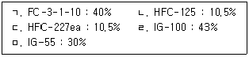
- ㄴ, ㄷ
- ㄹ, ㅁ
- ㄱ, ㄴ, ㅁ
- ㄱ, ㄷ, ㄹ
(정답률: 15%)
119. 분말소화설비의 화재안전성능기준상 방호구역에 분말소화설비를 전역 방출방식으로 설치하고자 한다. 방호구역의 조건이 다음과 같을 때 제3종 분말소화약제의 최소 저장량 (kg) 은?
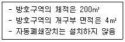
- 55.2
- 82.8
- 130.8
- 138.0
(정답률: 10%)
120. 제연설비의 화재안전기술기준상 제연구역에 관한 기준이 아닌 것은?
- 하나의 제연구역의 면적은 1,000m2 이내로 할 것
- 통로상의 제연구역은 보행중심선의 길이가 60m를 초과하지 않을 것
- 하나의 제연구역은 직경 50m 원내에 들어갈 수 있을 것
- 거실과 통로(복도를 포함한다)는 각각 제연구획 할 것
(정답률: 15%)
121. 연결송수관설비의 화재안전성능기준상 송수구와 방수구의 설치 기준이다. ( )에 들어갈 것으로 옳은 것은?
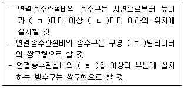
- ㄱ: 0.5, ㄴ: 1, ㄷ: 65, ㄹ: 11
- ㄱ: 0.5, ㄴ: 1, ㄷ: 80, ㄹ: 15
- ㄱ: 0.8, ㄴ: 1.5, ㄷ: 65, ㄹ: 11
- ㄱ: 0.8, ㄴ: 1.5, ㄷ: 80, ㄹ: 15
(정답률: 15%)
122. 소화기구 및 자동소화장치의 화재안전기술기준상 다음 조건에 따른 창고시설에 설치해야 하는 소형소화기의 최소 설치개수는?
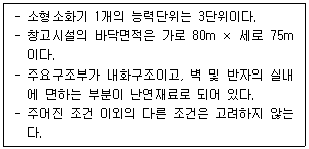
- 5개
- 10개
- 20개
- 34개
(정답률: 10%)
123. 연결살수설비의 화재안전기술기준상 송수구를 단구형으로 설치할 수 있는 경우 하나의 송수구역에 부착하는 살수헤드의 수는 몇 개 이하인가?
- 10개
- 15개
- 20개
- 25개
(정답률: 10%)
124. 비상콘센트설비의 화재안전성능기준상 전원 및 콘센트에 관한 기준이 아닌 것은?
- 절연저항은 전원부와 외함 사이를 500볼트 절연저항계로 측정할 때 20메가옴 이상일 것
- 비상전원의 설치장소는 다른 장소와 방화구획 할 것
- 비상전원은 비상콘센트설비를 유효하게 30분 이상 작동시킬 수 있는 용량으로 할 것
- 비상콘센트용의 풀박스 등은 방청도장을 한 것으로서, 두께 1.6밀리미터 이상의 철판으로 할 것
(정답률: 15%)
125. 무선통신보조설비의 화재안전성능기준 및 화재안전기술기준에 관한 설명으로 옳지 않은 것은?
- 누설동축케이블 및 안테나는 고압의 전로로부터 1.0m 이상 떨어진 위치에 설치하여야 한다.
- 지하층으로서 특정소방대상물의 바닥부분 2면 이상이 지표면과 동일한 경우에는 해당 층에 한해 무선통신보조설비를 설치하지 아니할 수 있다.
- 분배기의 임피던스는 50Ω의 것으로 할 것
- 증폭기에는 비상전원이 부착된 것으로 하고 해당 비상전원 용량은 무선통신보조설비를 유효하게 30분 이상 작동시킬 수 있는 것으로 할 것
(정답률: 10%)